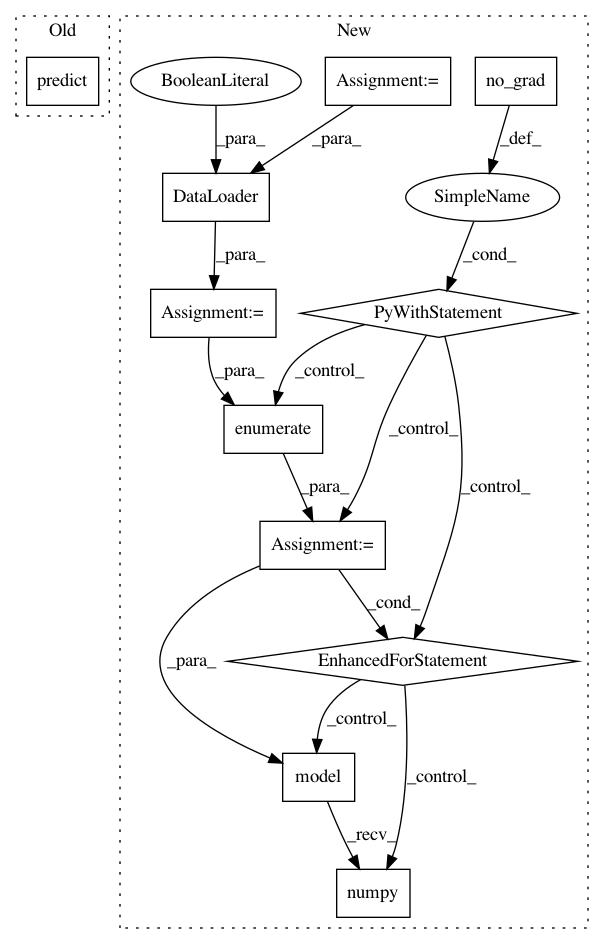

20675f9f01e8c365999fee3ff1e4ec55ec5f8b57,tests/onnx/test_onnx_model_export.py,,predicted,#Any#Any#,80
Before Change
@pytest.fixture(scope="module")
def predicted(model, data):
return model.predict(data[0])
@pytest.fixture(scope="module")
def tf_model_multiple_inputs_float64():
After Change
@pytest.fixture(scope="module")
def predicted(model, dataset):
batch_size = 16
num_workers = 4
dataloader = DataLoader(
dataset, batch_size=batch_size, num_workers=num_workers, shuffle=False, drop_last=False
)
predictions = np.zeros((len(dataloader.sampler),))
model.eval()
with torch.no_grad():
for i, batch in enumerate(dataloader):
y_preds = model(batch[0]).squeeze(dim=1).numpy()
predictions[i * batch_size : (i + 1) * batch_size] = y_preds
return predictions
@pytest.fixture(scope="module")
In pattern: SUPERPATTERN
Frequency: 3
Non-data size: 11
Instances
Project Name: mlflow/mlflow
Commit Name: 20675f9f01e8c365999fee3ff1e4ec55ec5f8b57
Time: 2020-12-15
Author: 39497902+dbczumar@users.noreply.github.com
File Name: tests/onnx/test_onnx_model_export.py
Class Name:
Method Name: predicted
Project Name: keras-team/autokeras
Commit Name: f4503bb3a3be014b452f54d8e2d187bb6419f627
Time: 2018-08-01
Author: jhfjhfj1@gmail.com
File Name: autokeras/classifier.py
Class Name: ImageClassifier
Method Name: predict